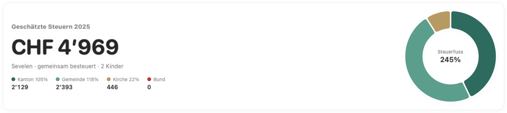
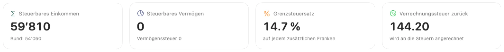

Belege lesen
Texterkennung direkt auf dem Mac. Erkennt Lohnausweise, Prämienbestätigungen, 3a-Bescheinigungen, Bankbelege, Arztrechnungen und Spenden.
Die Mac-App für Familien und Private im Kanton St.Gallen: Belege hineinziehen, alle Abzüge finden, Steuern auf den Franken genau berechnen – und Feld für Feld in E-Tax SG übertragen. Ihre Daten verlassen Ihren Mac nie.


Die Steuererklärung ist jedes Jahr dasselbe: Belege suchen, Formulare verstehen, Abzüge vergessen. Steuerhilfe SG nimmt Ihnen genau diese Arbeit ab.
Texterkennung direkt auf dem Mac. Erkennt Lohnausweise, Prämienbestätigungen, 3a-Bescheinigungen, Bankbelege, Arztrechnungen und Spenden.
Amtliche St.Galler Tariftabelle, Steuerfuss Ihrer Gemeinde und Kirchgemeinde, direkte Bundessteuer mit Elterntarif.
Säule 3a, Weiterbildungspauschale, Fahrkosten, Pensionskassen-Einkauf: jeder Tipp wird neu durchgerechnet.
Kinderabzüge, Kinderbetreuung, Zweiverdienerabzug, Ausbildungskosten und gemischt-konfessionelle Ehen – alles berücksichtigt.
Liste aller Felder mit Ziffer und Feldnummer, inklusive Formular 2, 4 und 6. Betrag anklicken, einfügen, abhaken.
Fahrkosten, Versicherungsabzug, Zweiverdienerabzug: Steuerhilfe SG zeigt beide Werte nebeneinander.
Personen, Kinder, Arbeitgeber und Konten werden ins neue Steuerjahr übernommen. Nur noch Beträge ergänzen.
Die komplette Berechnung für Ihre Unterlagen – Einkommen, Abzüge, Vermögen und Steuerbetrag auf drei Seiten.
Einreichefrist, letzter Tag für die Säule 3a, Verfalltag der Steuern: Steuerhilfe SG erinnert Sie an das Wichtige.
Alle Bildschirme zeigen eine fiktive Beispielfamilie aus Sevelen.
Jede Eingabe verändert den Betrag sofort. Kanton, Gemeinde, Kirche und Bund sind getrennt ausgewiesen, mit dem Steuerfuss Ihrer Gemeinde.
Fahrkosten, Berufskosten, Versicherungen oder Krankheitskosten: Für den Kanton und die direkte Bundessteuer gelten andere Grenzen. Steuerhilfe SG zeigt beide Werte nebeneinander.
Jedes Feld mit Ziffer und Feldnummer wie im amtlichen Formular. Betrag anklicken, in E-Tax SG einfügen, abhaken. So ist die Steuererklärung in Minuten eingereicht.
Der Fortschritt führt Sie Schritt für Schritt durch die Steuererklärung – von den Personalien bis zum Vermögen.
Zwei Erwerbseinkommen, zwei Kinder, Wohnung in Miete. Steuerhilfe SG hat die Steuern 2025 berechnet und konkrete Verbesserungen gefunden.
Fiktives Beispiel. Berechnung für Kantons-, Gemeinde-, Kirchen- und Bundessteuer, Steuerjahr 2025.
Grenzsteuersatz 14.7 %: Jeder abgezogene Franken spart rund 15 Rappen.
Steuerhilfe SG hat keinen Server. Lohn, Vermögen und Belege bleiben lokal, geschützt durch FileVault.
Keine Registrierung, keine E-Mail-Adresse, kein Tracking, keine Werbung.
Belege werden mit der Technik von macOS gelesen – ohne Upload zu einem Dienst.
Täglich eine Sicherungskopie, 30 Tage lang. Export jederzeit als Datei.
Steuerhilfe SG kennt die St.Galler Steuererklärung bis ins Detail: Formulare, Tarife, Abzüge und die Steuerfüsse aller Gemeinden. Deshalb ist die App derzeit ausschliesslich für den Kanton St.Gallen verfügbar.
Weitere Kantone sind in Vorbereitung. Wohnen Sie in einem anderen Kanton und möchten Steuerhilfe für Ihre Steuererklärung? Melden Sie sich – wir erstellen die Version für Ihren Kanton gerne auf Anfrage.
Version anfragenTestversion kostenlos: alles erfassen, Belege lesen lassen und die Steuern berechnen. Die Vollversion mit Übertragung in E-Tax SG, PDF-Bericht und allen Spartipps kostet CHF 39 pro Steuerjahr und Haushalt – der Lizenzschlüssel kommt per E-Mail.
Nein. Steuerhilfe SG bereitet die Steuererklärung vollständig vor und berechnet die Steuern. Eingereicht wird weiterhin über E-Tax SG, die Online-Steuererklärung des Kantons. Steuerhilfe SG zeigt Ihnen dafür jedes Feld mit Ziffer und Feldnummer, damit die Übertragung in wenigen Minuten erledigt ist.
Steuerhilfe SG verwendet die amtliche Tariftabelle des Kantons St.Gallen, die Steuerfüsse aller 75 Gemeinden und den Tarif der direkten Bundessteuer. Die Steuerberechnung wurde mit 16’704 Werten des offiziellen Steuerrechners der Eidgenössischen Steuerverwaltung verglichen. Massgebend bleibt immer die Veranlagung durch das Steueramt.
Nein. Steuerhilfe SG ist eine unabhängige App von Lweb in Sevelen. Sie ist weder vom Kanton St.Gallen noch von der Eidgenössischen Steuerverwaltung herausgegeben oder geprüft.
Ausschliesslich auf Ihrem Mac, im geschützten Bereich der App. Steuerhilfe SG sendet keine Daten ins Internet und verlangt kein Konto. Eine tägliche Sicherung wird lokal angelegt; einen Export können Sie jederzeit selbst erstellen.
Noch nicht. Steuerhilfe SG ist derzeit nur für den Kanton St.Gallen verfügbar, weil jeder Kanton eigene Formulare, Tarife und Abzüge hat. Weitere Kantone folgen. Schreiben Sie uns an info@lweb.ch – wir erstellen auf Anfrage gerne eine Version für Ihren Kanton.
Für Private und Familien im Kanton St.Gallen: Angestellte, Rentnerinnen und Rentner, Familien mit Kindern, Wohneigentum, Konten und Wertschriften. Für Selbständigerwerbende und Landwirte deckt Steuerhilfe SG erst die Grundlagen ab.
Steuerhilfe SG ist bewusst eine native Mac-App – schnell, offline und mit der Texterkennung von macOS. Weitere Plattformen sind derzeit nicht geplant.
Die Testversion ist kostenlos: Sie können alles erfassen und sehen Ihren Steuerbetrag. Die Vollversion kostet CHF 39 pro Steuerjahr und Haushalt und schaltet die Übertragung in E-Tax SG, den PDF-Bericht, alle Spartipps im Detail und den Datenexport frei. Ihre Eingaben bleiben beim Freischalten erhalten.
In Steuerhilfe SG auf «Testversion» klicken und «Lizenz bei Lweb anfragen» wählen – oder direkt an info@lweb.ch schreiben. Sie erhalten einen persönlichen Lizenzschlüssel per E-Mail, den Sie in der App einfügen. Die Prüfung erfolgt offline, ohne Konto.